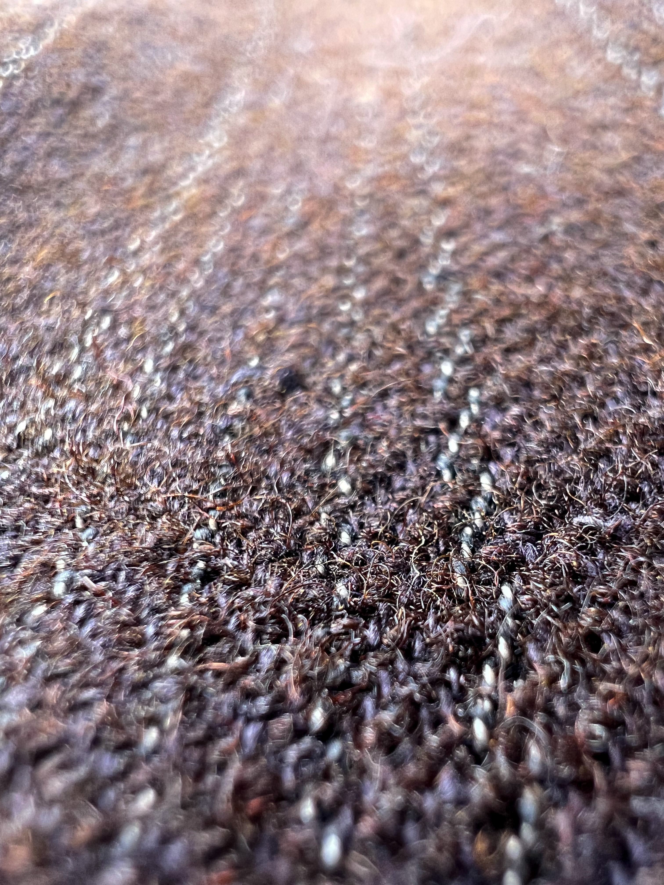
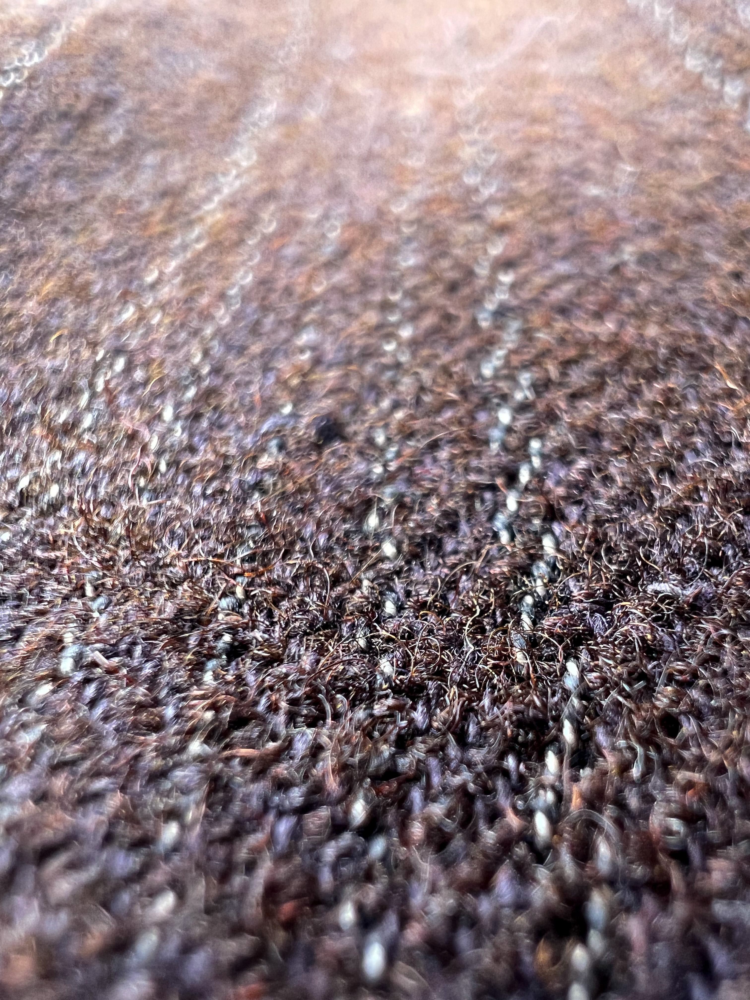

このベストはフランスの1930年代のファーマーズベストになります。
ファーマーズベストとは、その名前の通り農家の方が仕事をする時に着ていた洋服です。
特徴としては背中に付いているシンチバックという金具です。この金具を使ってベストの身幅を絞ることができ、より身体にフィットするように着用できます。
表の素材はウールになっています。他には茶色いボタンがありますが、これはココナッツボタンと言ってココナッツの実から作られたボタンになります。
裏地は汚れていますが、綺麗なストライプで当時のモノづくりの良さが伺えます。
